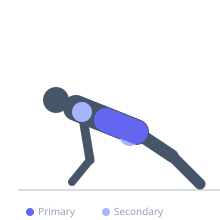
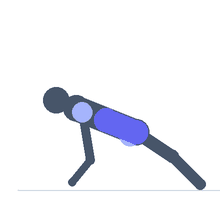

Exercise guide / Single-Arm / Single-Leg Elevated Plank
Single-Arm / Single-Leg Elevated Plank
The single-arm or single-leg plank removes one point of contact from the standard high plank, dramatically increasing the anti-rotation demand on the obliques and quadratus lumborum as the core resists the tendency to rotate toward the lifted limb. The contralateral variation — lifting one arm and the opposite leg simultaneously — maximises this anti-rotation challenge while also requiring lumbopelvic control in multiple planes. It is a highly effective progression from the standard plank without adding any external load.
Primary muscles
transverse abdominis
internal oblique
external oblique
Secondary muscles
erector spinae
gluteus maximus
deltoid anterior
Stabilizers
rectus abdominis
gluteus medius
Equipment
No Equipment (Bodyweight)


Starting position
- Begin in a standard high plank position: hands under shoulders, body in a straight line from head to heel, core braced.
Setup
- Master the standard high plank for 60+ seconds before attempting single-limb variations.
Steps
- Step 1: Begin in a high plank. Brace the core maximally.
- Step 2: For single-arm variation: slowly lift one hand off the floor, extending the arm forward or placing it on the lower back.
- Step 3: For contralateral variation: simultaneously lift one hand and the opposite foot off the floor.
- Step 4: Hold the position without allowing the hips to rotate or drop.
- Step 5: Return the limb(s) to the floor and repeat on the other side.
Coaching cues
- Hips square — a glass of water sits on your lower back and cannot spill
- Squeeze the working glute and opposite shoulder
Breathing
- Breathe shallowly but continuously. Do not hold the breath during the hold.
Range of motion
- Isometric hold for time — typically 20–40 seconds per side.
Tempo
- Hold for 20–40 seconds each side. Slow, controlled transitions.
Common mistakes
- Rotating the hips toward the lifted arm — the hips must remain perfectly square
- Widening the support foot to compensate rather than maintaining proper challenge
Safety
- Regress immediately if hip rotation cannot be controlled
Training
- strength: 3–5 reps
- strength: 3–4 sets
- Rest: {'strength': 60}